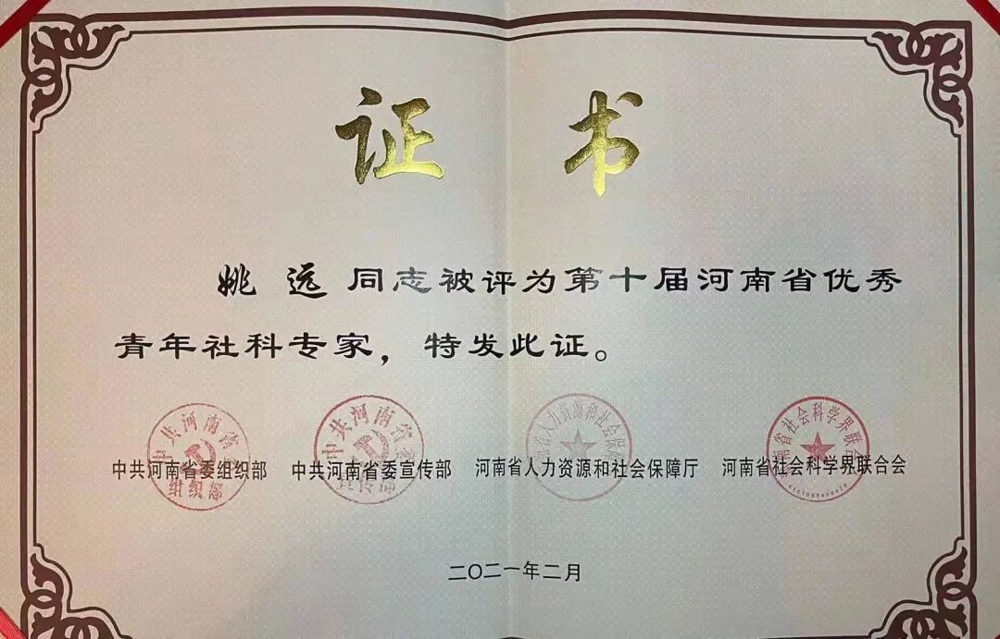
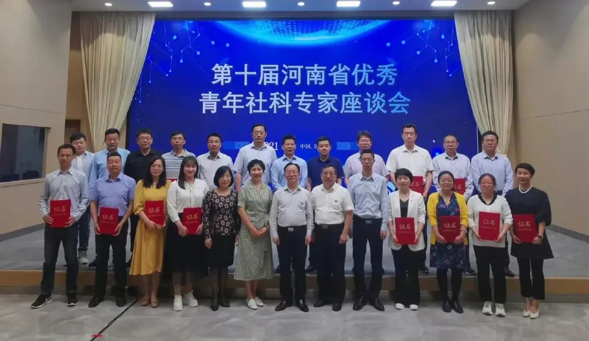

我院姚远教授荣获第十届“河南省优秀青年社科专家”称号
发布时间：2021-05-20 15:44:36 作者：商学院
近日，我院校级特聘教授、博士生导师，九三学社社员姚远被中共河南省委组织部、中共河南省委宣传部、河南省人力资源和社会保障厅、河南省社会科学界联合会联合授予“第十届河南省优秀青年社科专家”的殊荣。
5月12日，河南省社科联隆重举行第十届河南省优秀青年社科专家颁发证书仪式，并召开专题座谈会。省社科联党组书记、主席李庚香出席会议并讲话，党组成员、副主席李新年，省委宣传部理论处处长杨小强，省人社厅专技处一级调研员付承香，省社科联各部门负责同志及姚远等20位第十届河南省优秀青年社科专家参加座谈会。省社科联副主席苗树群主持会议。
座谈会上，青年专家们围绕如何落实河南省委常委、宣传部长江凌关于“三个突破”的讲话要求，结合各自研究领域进行了广泛深入交流。姚远就自己的研究专题《数字金融支持河南经济高质量发展的机制、路径与对策研究》做了发言。她认为，要关注数字金融对河南省金融环境与资源配置的作用，注意数字金融相关配套的建立。并表示，此次荣获河南省优秀青年社科专家称号，是党和政府对河南省社会科学专业人才的关心和鼓励，不仅是一份耀眼的荣誉，更是一份沉甸甸的责任和担当。她要以此为契机，更加自觉地立足本职、面向实践，聚焦重大现实问题，以自己的智慧和付出，为实现中华民族伟大复兴中国梦，为奋力谱写中原更加出彩绚丽篇章做出新的更大贡献。
“河南省优秀青年社科专家”已经组织评选了十届，表彰了一批省内在社会科学领域做出突出贡献的青年社会科学工作者。此次获奖是对姚远教授几十年如一日执着追求、献身教学与科研的最好褒奖，也为我院青年老师树立了优秀榜样，调动大家的积极性和创造性，为进一步促进全省哲学社会科学事业的繁荣发展奠定基础。
姚远，女，1975 年生，河南开封市人。管理学博士，河南大学特聘教授，河南大学商学院教授，博士生导师，九三学社社员。英国 Ulster 大学访问学者。主要从事金融工程、数理金融等方面的教学与科研工作。